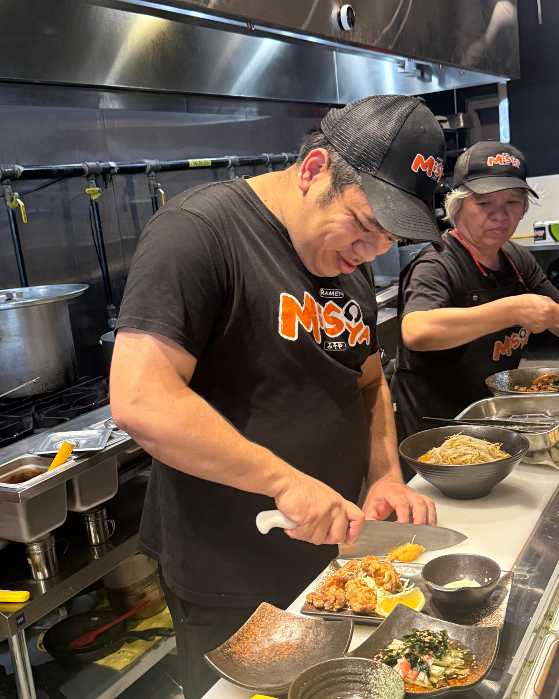
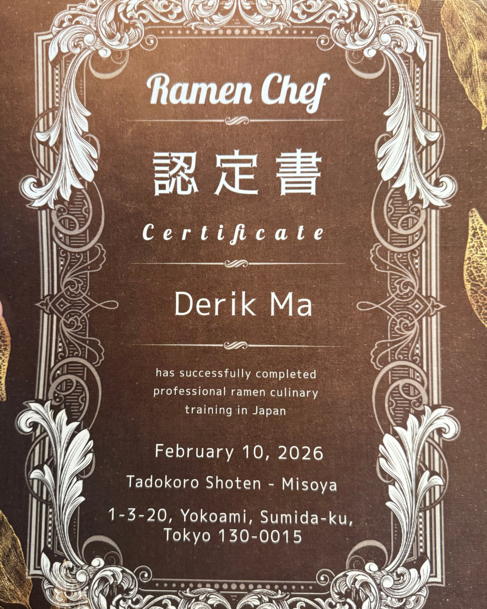

SPOTLIGHT × RAMEN MISOYA
Un secret vous attend chez Misoya
Découvrez l’histoire de Derik et débloquez une offre exclusive réservée à la communauté RestoEnLigne.
1 clic • Aucun formulaire • Offre révélée immédiatement
Disponible du 10 au 27 septembre 2026 inclusivement.
Portrait de restaurateur
De plongeur à chef de ramen certifié au Japon.
Derik Ma est arrivé au Canada à 14 ans. Son premier emploi étudiant, plongeur dans un restaurant à Anjou, est devenu sa première école de restauration.

Tout a commencé bien avant Misoya.
Au fil des quarts de travail, Derik apprend le rythme du service, la pression d’une cuisine occupée et la discipline nécessaire pour faire fonctionner un restaurant.
Vers 28 ans, il ouvre son premier restaurant. Dix-huit mois plus tard, il doit fermer. Une épreuve qui lui apprend ce qu’aucune salle de classe ne pouvait enseigner.
« Mon premier restaurant n’a duré que 18 mois. Mais il m’a appris ce qu’aucune école ne pouvait m’apprendre. »
Le secret de Lucky
Curieux de découvrir ce que Lucky vous réserve?

Le tournant : le Japon
Il voulait comprendre le métier derrière le bol.
Derik part au Japon pour trois semaines de formation intensive. Il revient à Montréal avec une compréhension nouvelle du bouillon, des nouilles et des détails qui font la différence à chaque service.
- Trois semaines au Japon
- Formation intensive
- Certification officielle Ramen Chef
RAMEN MISOYA WEST ISLAND
Un morceau du Japon dans l’Ouest-de-l’Île.
Le miso et les nouilles sont importés directement du Japon. Les bouillons, les viandes et la préparation quotidienne sont faits sur place pour créer un bol riche, profond et authentique.


Attendez… où est Lucky?
Lucky vous mène de l’histoire… jusqu’au restaurant.
Le Shiba Inu de Derik a caché deux offres Spotlight. Elles se débloquent en un clic, sans formulaire.
Offres valides uniquement ici
Ramen Misoya Ouest-de-l’Île
3687 boul. Saint-Jean
Dollard-des-Ormeaux, QC H9G 1T2